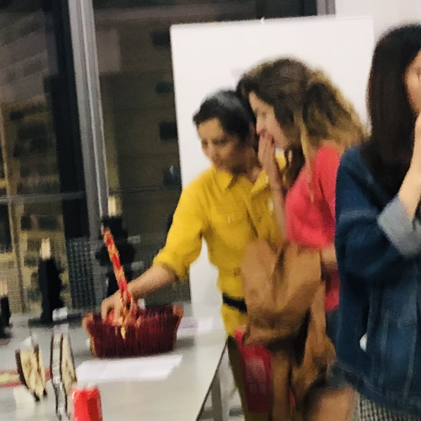
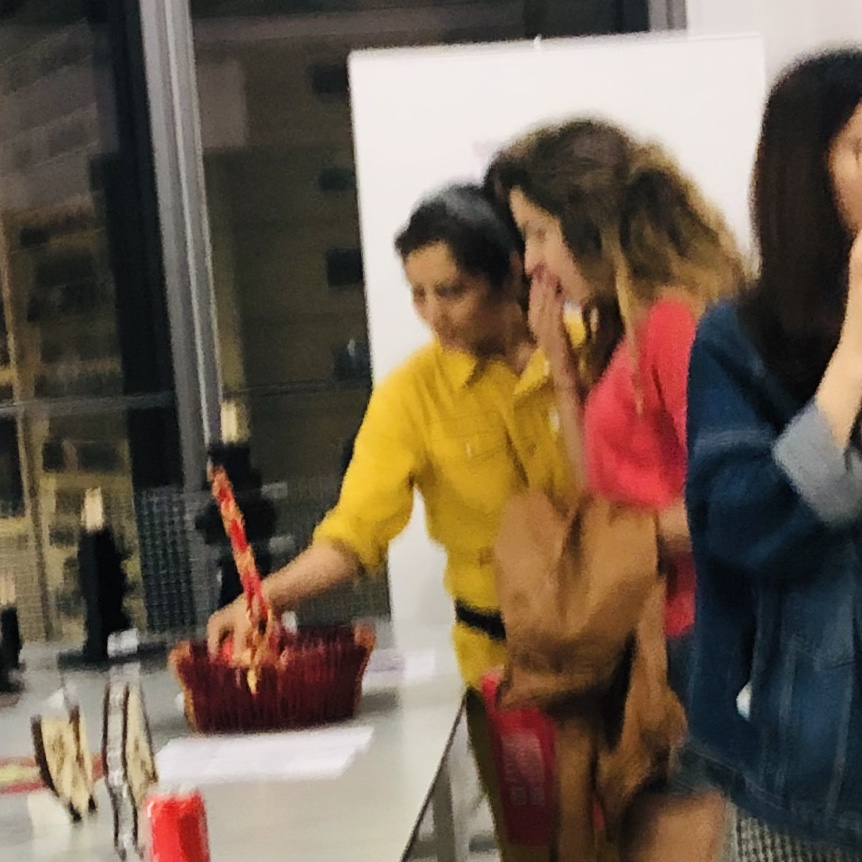
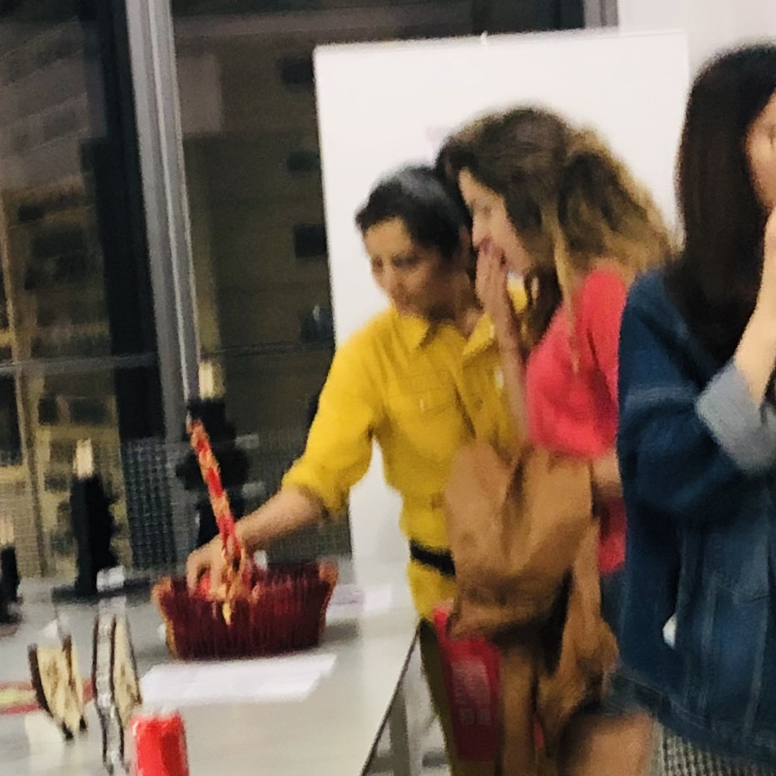
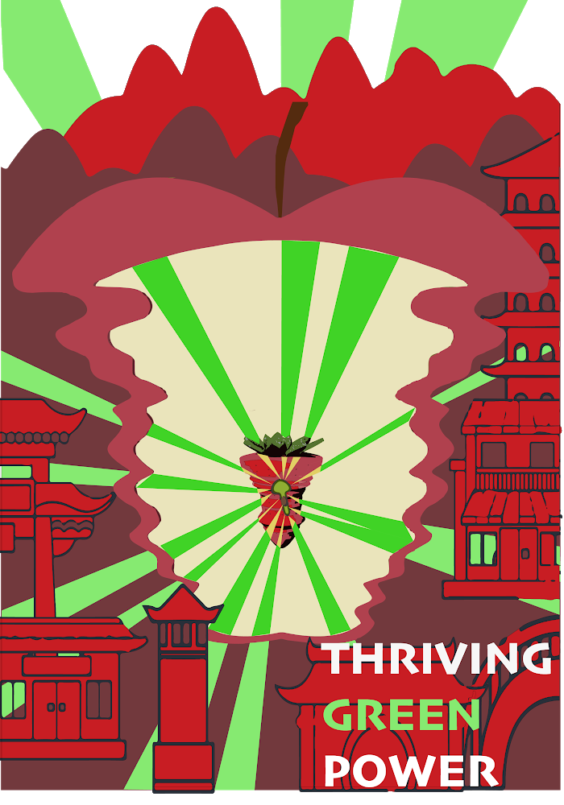

This is a project of 3D printed data visualization of fruit consumption in China. It
encourages thoughts concerning globalization behind the thriving of avocado market.
The uprising of avocados in Chinese market has
been a miracle. The demand of avocados by young middle-class has increased roughly 1000
times more in a decade. Fruits are always a popular choice for gifts in China, and the trend of
popular fruits tells us what Chinese consumers favor in a global market.

I embody this idea using the concept of data sculpture,
which is “a direct externalization of the data” in three fruits:
apple, strawberry and avocado.
From this visualization, my viewers will realize the demand of apple and strawberry are dropping over the
years, even though the market for apple is still huge; the demand of avocade, however, boosts in a very short time
that the shape looks very unnatural.
Viewers are led to think about the concept of “traditional”
and “popular”, and the purpose is to raise the awareness of a changing global market.
In the near future, how will avocados, the green power, continues to thrive in Chinese market?
Will more consumers follow this trend where avocade is often branded as “healthy food,” “best choice
for a diet?” How to recognize the bandwagon effect behind this crazily growing market “colonialization”?
I held an exhibition show for this project. I 3D printed three friut models, colored them and put them in a Chinese fruit gift basket. In the show, audiences got to read my motivation of creation and touched the "data" with their own hands.
Poster for the exhibition show
datasets are from Food and Agriculture Organization of the United Nations
Grasshopper codes can be found in my Github